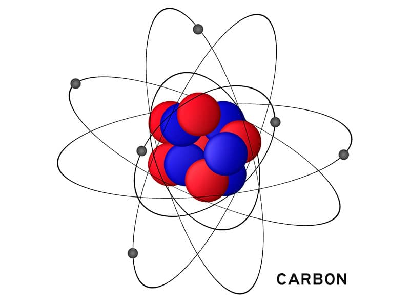
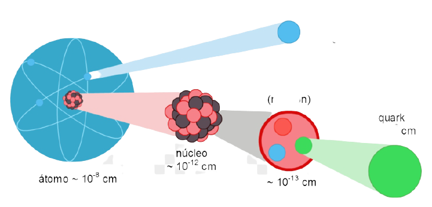

|Que es un Atomo?
Para conocer qué es un átomo desde su descubrimiento, debemos remontarnos a su etimología que, en este caso, procede del latín atŏmus y su significado es indivisible. Este término se lo atribuyó Demócrito de Abdera, discípulo de Leucipo de Mileto.
|Caracteristicas Del Atomo
Aunque el átomo es una unidad básica, está compuesto de tres subestructuras:.
- Los protones.
- Los neutrones.
- Los electrones.
Estas partículas subatómicas tienen un orden en particular dentro del átomo. Los protones y los neutrones forman el núcleo atómico mientras que los electrones orbitan alrededor de éste. Adicionalmente, estas partículas están definidas por su carga eléctrica, donde los protones tienen una carga eléctrica positiva, los electrones negativa y los neutrones como su nombre lo indica, no tienen carga alguna, aunque aportan otras características al átomo. Otra particularidad importante de estas partículas es la masa. La mayor parte de la masa se encuentra en el núcleo, o sea, en los protones y los neutrones. Un protón tiene aproximadamente 1,800 veces la masa de un electrón. Los electrones orbitan alrededor del núcleo en una nube que tiene un radio de aproximadamente 10,000 veces el tamaño del núcleo.
|Detalles de la Estructura de un atomo
El progreso tecnológico llevo al descubrimiento de nuevas partículas subatómicas aparte de las tres básicas que mencionamos y que han supuesto grandes avances en el entendimiento de la estructura y el funcionamiento del átomo como los quarks, los leptones y los bosones.
Núcleo de Átomo.
El núcleo atómico está formado de protones y neutrones que en conjunto se llaman nucleones y contienen casi la totalidad de la masa del átomo. Un 99.999% de la masa, se encuentra en estas dos estructuras, los protones y los neutrones, que según el modelo estándar se encuentran unidos por la “fuerza nuclear fuerte”. Esta fuerza también conocida como “interacción nuclear fuerte” o simplemente “fuerza fuerte” vence la repulsión electromagnética que existe entre dos protones que tienen la misma carga eléctrica y los mantiene unidos entre sí junto a los neutrones que no tienen carga. La Tierra contiene aproximadamente 1.33 × 1050 átomos.
Protones.
Portadores de la carga positiva, los protones son parte del núcleo y aportan casi la mitad de la masa de un átomo. Con ligeramente menos masa que los neutrones, los protones tienen una masa de 1.67×10-27 Kilogramos o sea 1836 veces la masa de un electrón. La masa de un protón es 99.86% la masa de un neutrón. El número de protones determina de qué elemento de la tabla periódica estamos hablando. En este sentido, un átomo de sodio tiene 11 protones, uno de carbono seis, uno de oxígeno 8 o uno de Uranio 92. Si vemos la tabla periódica podremos observar que este número de protones equivale al número atómico de cada uno de éstos elementos.
Quarks.
Portadores de la carga positiva, los protones son parte del núcleo y aportan casi la mitad de la masa de un átomo. Con ligeramente menos masa que los neutrones, los protones tienen una masa de 1.67×10-27 Kilogramos o sea 1836 veces la masa de un electrón. La masa de un protón es 99.86% la masa de un neutrón.  El número de protones determina de qué elemento de la tabla periódica estamos hablando. En este sentido, un átomo de sodio tiene 11 protones, uno de carbono seis, uno de oxígeno 8 o uno de Uranio 92. Si vemos la tabla periódica podremos observar que este número de protones equivale al número atómico de cada uno de éstos elementos.
Neutrones.
El otro elemento del núcleo son los neutrones con una masa ligeramente superior a la de los protones o lo que es equivalente a 1.69x 10-27 Kilogramos o 1839 veces la masa de un electrón. Igual que los protones, los neutrones están hechos de quarks pero tienen uno ascendente con carga (+2/3) y dos descendentes con carga (-1/3) cada uno lo que da una carga neta de cero.
Electrones.
La partícula más pequeña del átomo son los electrones que son más de 1800 veces más pequeños que los protones y los neutrones, ya que tienen una masa de 9.109×10-31 kilogramos lo que equivale a 0.054% de la masa del átomo. Los electrones orbitan el núcleo del átomo en una órbita con un radio de unas 10,000 veces el tamaño del núcleo formando lo que se conoce como la nube de electrones. Estos son atraídos a los protones del núcleo por la fuerza electromagnética que atrapa a los electrones en un “pozo de potencial” electrostático alrededor del núcleo.